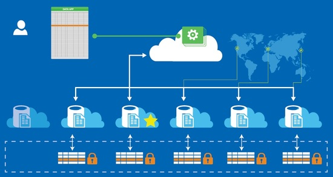

La base de datos distribuida consiste en el almacenamiento de porciones de la base de datos en diferentes ubicaciones físicas y, por tanto, el procesamiento está distribuido o replicado entre los distintos puntos de una red de trabajo. Consecuentemente, la base de datos distribuida tiene una mayor disponibilidad de los datos debido a sus múltiples ubicaciones. De esta forma, si una de las bases de datos fallase, se podría seguir funcionando correctamente, aunque puede que un poco ralentizado. Sin embargo, esta misma característica de estar distribuido puede provocar que haya duplicidad de los datos y un menor nivel de seguridad.
Dentro de las bases de datos distribuidas hay 2 tipos: homogéneas y heterogéneas. Las homogéneas son conscientes de las otras ubicaciones y cooperan en el procesamiento de las solicitudes. Además, tienen el mismo esquema y el mismo sistema de gestión de base de datos (DBMS). Mientras que las heterogéneas cooperan de forma limitada el procesamiento ya que pueden tener el DBMS y los esquemas diferentes e, incluso, que los sitios no se conozcan entre sí. En resumen, las homogéneas se utilizan generalmente dentro de una misma empresa u organización y, por eso, tienen el mismo DBMS y se conocen. Las heterogéneas se suelen utilizan entre distintas empresas u organizaciones en las que cada una tiene su propio DBMS y, es posible, que ni conozcan cuáles son las otras ubicaciones.

VENTAJAS Y DESVENTAJAS:
VENTAJAS:
1. Permiten trabajar a cada nodo de la red con autonomía local
2. Aumentan la disponibilidad, confiabilidad y eficiencia en el acceso a la información.
3. Se pueden expandir de forma indefinida en función de las necesidades de la empresa u organización.
4. Permiten la escalabilidad sin necesidad de grandes inversiones.
5. Los recursos se comparten entre nodos, de manera que se puede acceder a toda la información desde cualquier sitio
DESVENTAJAS:
1. Resulta más difícil establecer mecanismos para controlar el acceso a los datos y garantizar la seguridad.
2. Los errores en la red pueden tener graves consecuencias para la privacidad de la información.
3. Es un sistema más complejo de implementar.
4. Conseguir una transparencia óptima puede suponer un importante gasto de tiempo y dinero.
5. Falta de experiencia y ausencia de estándares en el desarrollo e implementación de estas bases de datos.
6. Posibles problemas de rendimiento o fiabilidad derivados del punto anterior.